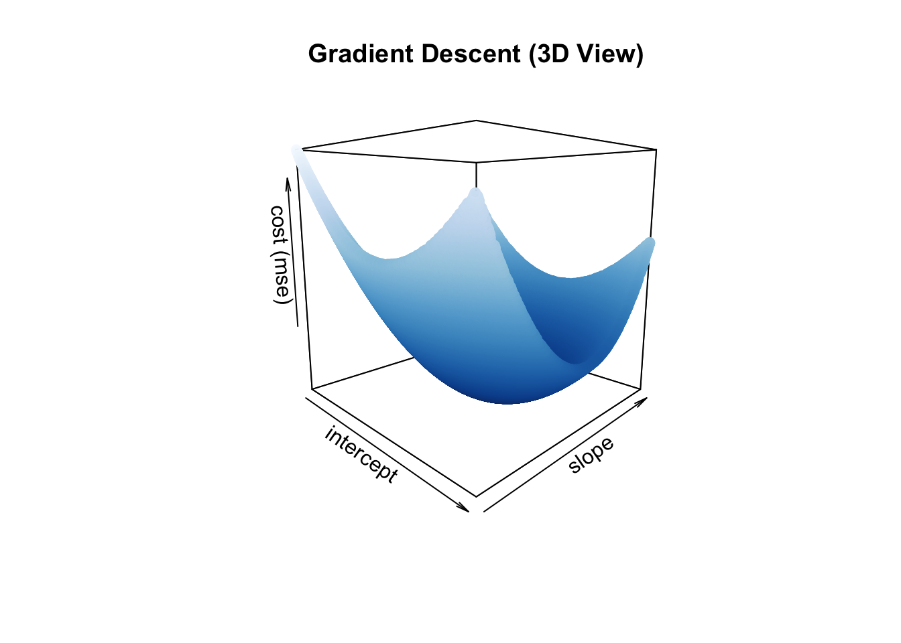
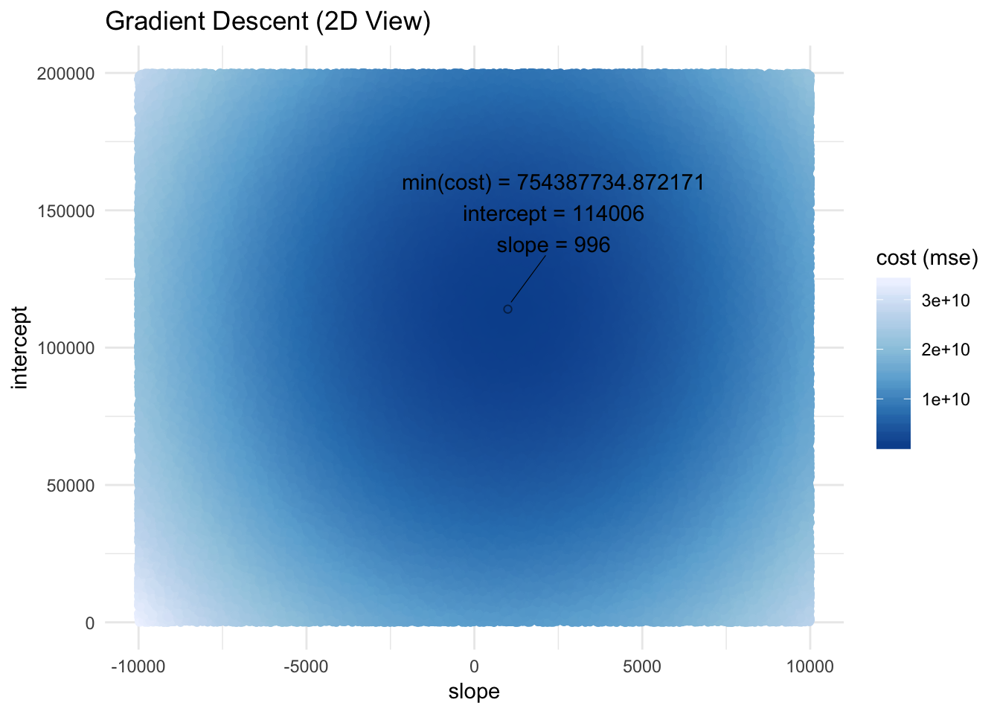
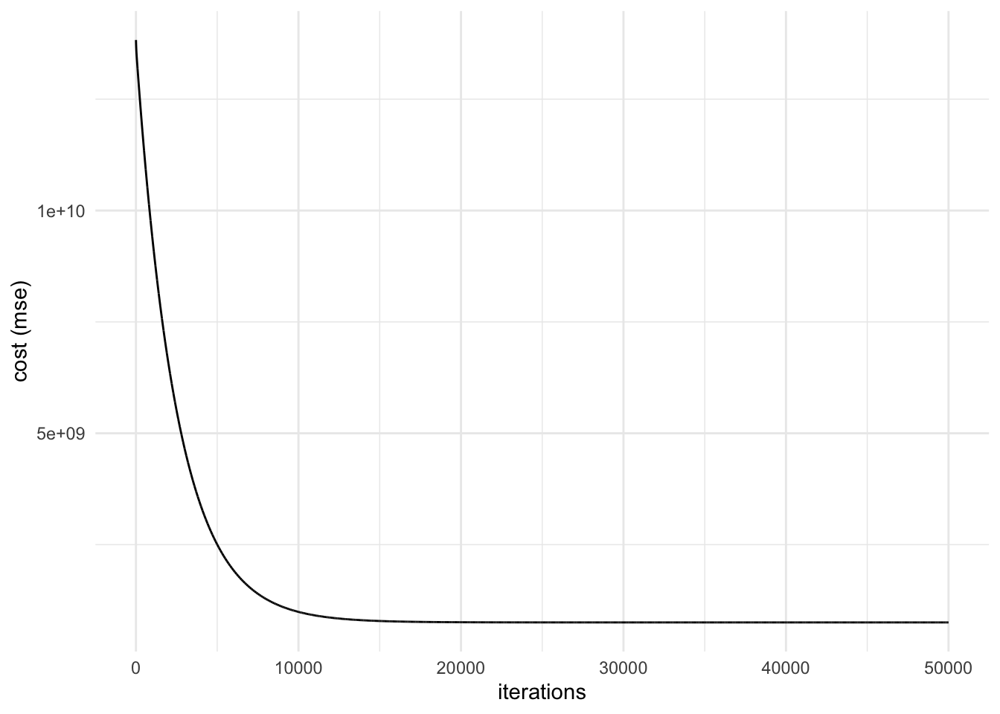
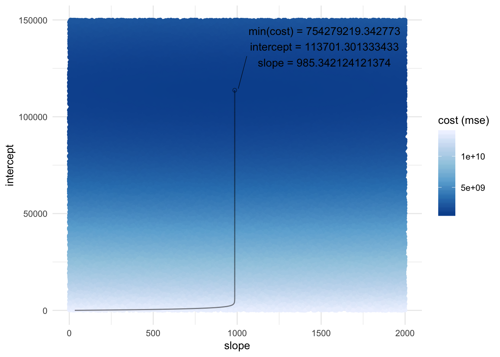

A brief tutorial on solving OLS using gradient descent using R.
Remember that the equation for OLS is:
\[
\tag{1}
Y = X\beta + \epsilon
\]
where \(Y\) is a column-wise vector of DVs, \(X\) is a matrix of IVs, \(\beta\) is a column-wise vector of regression coefficients, and \(\epsilon\) is a column-wise vector of error.
\[
\begin{bmatrix}
\tag{2}
y_1 \\
y_2 \\
. \\
. \\
. \\
y_n \\
\end{bmatrix} =
\begin{bmatrix}
1 & x_{1, 1} & x_{1, 2} & . & . & . & x_{1, n} \\
1 & x_{2, 1} & x_{2, 2} & . & . & . & x_{2, n}\\
. & . & . & . & . & . & .\\
. & . & . & . & . & . & .\\
. & . & . & . & . & . & .\\
1 & x_{n, 1} & x_{n, 2} & . & . & . & x_{n, n}\\
\end{bmatrix}
\begin{bmatrix}
b_0 \\
b_1 \\
. \\
. \\
. \\
b_n \\
\end{bmatrix} +
\begin{bmatrix}
e_1 \\
e_2 \\
. \\
. \\
. \\
e_n \\
\end{bmatrix}
\]
For a review of matrix multiplication, check out my previous blog post .
OLS tries to minimize error using the mean squared error (MSE) formula:
\[
\tag{3}
MSE = \frac{\Sigma (Y-\hat{Y})^2}{N} = \frac{\Sigma e_i^2}{N} = mean(e_i^2)
\]
where \(\hat{Y} = X\beta\)
Note: MSE is a single cost function (or formula) from many that we could choose from. For example, another cost function is mean absolute error (MAE):
\[
\tag{4}
MAE = \frac{\Sigma |Y-\hat{Y}|}{N} = \frac{\Sigma|e_i|}{N} = mean(abs(e_i))
\]
obtain_cost <- function(y, x, b) {
y_pred <- x %*% b
e <- y - y_pred
se <- e^2
mse <- mean(se)
return(mse)
}
Let’s say that we are interested in understanding if the number of years a professor has had their Ph.D. is associated with a higher 9-month academic salary.
R Libraries
First, let’s load some packages.
packages <- c("tidyverse", # data manipulation and visualization
"carData", # data set to obtain professor's 9-month salary
"broom", # nice table format of cofficients from lm()
"ggrepel", # ggplot extension to repel text and extra features
"glue", # concatentate strings and alias
"plot3D", # plot 3D figures
"RColorBrewer" # load color palettes
)
xfun::pkg_attach(packages, message = F)
Data
Then, let’s define our IV (yrs.since.phd) as x and our DV (salary) as y using the Salaries dataset in the carData package.
x <- model.matrix(~ scale(yrs.since.phd, scale = F), Salaries)
colnames(x) <- c("(Intercept)", "yrs.since.phd")
dim(x)## [1] 397 2head(x)## (Intercept) yrs.since.phd
## 1 1 -3.314861
## 2 1 -2.314861
## 3 1 -18.314861
## 4 1 22.685139
## 5 1 17.685139
## 6 1 -16.314861y <- Salaries$salary %>% as.matrix()
colnames(y) <- c("salary")
dim(y)## [1] 397 1head(y)## salary
## [1,] 139750
## [2,] 173200
## [3,] 79750
## [4,] 115000
## [5,] 141500
## [6,] 97000
Gradient Descent
What is gradient descent?
Starting at any position (i.e., intercept and slope combination), gradient descent takes the partial derivative of each coefficient (\(\beta\) ) from the cost function (MSE) and moves (or descends) in the direction that will continue to minimize the cost (or gradient) function.
# random sample of possible intercepts and slopes
# then calculate cost function (mse) for each intercept and slope combination
n_sample <- 200000
df_gd <- tibble(
int = sample(seq(0, 200000), n_sample, T),
slope = sample(seq(-10000, 10000), n_sample, T)
) %>%
rowwise() %>%
mutate(cost = obtain_cost(y, x, b = c(int, slope)))scatter3D(x = df_gd$int,
y = df_gd$slope,
z = df_gd$cost,
xlab = "intercept",
ylab = "slope",
zlab = "cost (mse)",
col = ramp.col(col = sort(RColorBrewer::brewer.pal(9, "Blues"), decreasing = F),
n = length(unique(df_gd$cost))),
colkey = F,
phi = 10,
theta = 45,
main = "Gradient Descent (3D View)"
)
# plot intercept and slope, and color by cost (mse)
# highlight and label min(cost)
ggplot(df_gd, aes(slope, int, color = cost)) +
geom_point() +
geom_point(data = subset(df_gd, cost == min(cost)), color = "black", shape = 21, alpha = .5) +
geom_text_repel(
data = subset(df_gd, cost == min(cost)),
mapping = aes(label = paste0("min(cost) = ", cost, "\nintercept = ", int, "\nslope = ", slope)),
nudge_y = 30000,
nudge_x = 1000,
box.padding = 1.5,
point.padding = 0.5,
segment.size = 0.2,
segment.color = "black",
color = "black"
) +
labs(
title = "Gradient Descent (2D View)",
y = "intercept",
color = "cost (mse)"
) +
scale_color_distiller(palette = "Blues") +
theme_minimal()
We can see from these random samples of intercepts and slopes that the lowest cost is 7.543877310^{8} with an intercept of 114006 and slope of 996. So no matter where we start (any intercept and slope combination), we should descend and ultimately end up with the lowest cost value of 7.543877310^{8}.
Partial Derivatives
How do we calculate the partial derivatives?
First, we expand MSE.
\[
\tag{5}
\begin{align}
MSE & = \frac{(Y-X\beta)^2}{N} \\
& = \frac{(Y-X\beta)(Y-X\beta)}{N} \\
& = \frac{(Y^2-2YX\beta+X^2\beta^2)}{N} \\
& = \frac{Y^2}{N} - \frac{2YX\beta}{N}+\frac{X^2\beta^2}{N} \\
\end{align}
\]
To calculate the partial derivative, we repeat the following for each term:
Set the term without \(\beta\) to 0
Multiply the term by the exponent of \(\beta\)
Subtract 1 from the exponent of \(\beta\)
and simplify.
\[
\tag{6}
\begin{align}
\frac{\partial MSE}{\partial \hat{\beta}} & = 0 - \frac{1*2YX\beta^0}{N} + \frac{2X^2\beta^1}{N} \\
& = \frac{-2YX+2X^2\beta}{N} \\
& = \frac{-2X(Y-X\beta)}{N} \\
& = \frac{-2X\epsilon}{N}
\end{align}
\] Note: We set the term without \(\beta\) to 0 in step 1 because that term can be thought of as having \(\beta^0\) , which equals 1. When we then multiply the term by the exponent of 0, we end up with a term of 0.
Update Coefficients
How do we update the coefficients?
We can update the coefficients \(\beta\) by subtracting the partial derivatives multiplied by the learning rate.
\[
\tag{7}
\hat{\beta} = \hat{\beta} - \frac{\partial MSE}{\partial \hat{\beta}}*learning\ rate
\]
This essentially moves the coefficients into the direction of a lower cost function. How fast the coefficients update is determined by the learning rate. A higher learning rate descends quickly but may be susceptible to skipping or moving passed the global minima. A lower learning rate is more precise but is slower as it takes more time to compute.
update_b <- function(y, x, b, lr) {
y_pred <- x %*% b
e <- y - y_pred
derivatives <- (-2 * t(x) %*% e ) / nrow(x)
b <- b - derivatives * lr
return(b)
}
Train
Now, let’s train the data arbitrarily starting the coefficients at 0.
# set number of iterations
iter <- 50000
# set learning rate
lr <- 0.0001
# set initial values of coefficients
b <- NULL
for (i in 1:ncol(x)) {
b[i] <- 0
}
b <- as.matrix(b)
cat(paste("iteration", "intercept", "slope", "cost\n",
"0", b[1], b[2], obtain_cost(y, x, b)))## iteration intercept slope cost
## 0 0 0 13844273659.2443# set initial training dataset
df_train <- tibble(
iter = NA,
int = NA,
slope = NA,
cost = NA,
.rows = iter
)
# train and save training history using for loop
for (i in 1:iter) {
b <- update_b(y, x, b, lr)
df_train$iter[i] <- i
df_train$int[i] <- b[1]
df_train$slope[i] <- b[2]
df_train$cost[i] <- obtain_cost(y, x, b)
if (i %in% round(seq(1, iter, length.out = 10), 0)) {
cat(paste("\n", i, b[1], b[2], obtain_cost(y, x, b)))
}
}##
## 1 22.7412916876574 32.6456713829794 13828621661.1008
## 5556 76282.5760643239 985.342124121374 2154826164.68728
## 11112 101389.24276579 985.342124121374 905992994.66985
## 16667 109651.717424604 985.342124121374 770720117.435087
## 22223 112371.933092611 985.342124121374 756060150.645294
## 27778 113267.142054066 985.342124121374 754472191.632487
## 33334 113561.867489683 985.342124121374 754300099.289461
## 38889 113658.860112082 985.342124121374 754281458.3477
## 44445 113690.792536934 985.342124121374 754279438.167507
## 50000 113701.301333433 985.342124121374 754279219.342773
Plot Training
ggplot(df_train, aes(iter, cost)) +
geom_line() +
theme_minimal() +
labs(
x = "iterations",
y = "cost (mse)"
)
We can see that cost (MSE) flattens out around 15,000 iterations.
Plot Gradient Descent Path
Let’s visualize the path that the gradient descent took starting from our initial intercept and slope value of 0.
n_sample <- 100000
df_gd <- tibble(
int = sample(seq(0, 150000), n_sample, T),
slope = sample(seq(0, 2000), n_sample, T)
) %>%
rowwise() %>%
mutate(cost = obtain_cost(y, x, b = c(int, slope)))
df_train_sorted <- df_train %>% arrange(cost, iter)
df_min <- df_train_sorted[1, ]
ggplot(df_gd, aes(slope, int, color = cost)) +
geom_point() +
scale_color_distiller(palette = "Blues") +
theme_minimal() +
labs(
y = "intercept",
color = "cost (mse)"
) +
geom_line(data = df_train, mapping = aes(slope, int), color = "black", size = 0.5, alpha = 0.5) +
geom_point(data = df_min, mapping = aes(slope, int), color = "black", shape = 21, alpha = .5) +
geom_text_repel(
data = df_min,
mapping = aes(label = paste0("min(cost) = ", cost, "\nintercept = ", int, "\nslope = ", slope)),
nudge_y = 30000,
nudge_x = 1000,
box.padding = 1.5,
point.padding = 0.5,
segment.size = 0.2,
segment.color = "black",
color = "black"
)
We can see that most of the iterations were spent optimizing the slope with minimal changes to the intercept as well as the cost (MSE) up until around iteration 1000. Then, the optimal intercept was found within a few iterations, which dramatically reduced cost (MSE).
Compare Gradient Descent and lm()
We can compare the results of gradient descent with lm() to ensure that we did this correctly. We should approximately have the same results within rounding error because OLS is a convex shape with only one global minima.
Solve OLS using Gradient Descent
coef <- c("(Intercept)" = df_min$int, "yrs.since.phd" = df_min$slope)
rmse_coef <- (solve(t(x) %*% x) * df_min$cost) %>%
diag() %>%
sqrt()
t_stat <- coef / rmse_coef
n <- nrow(x)
p <- ncol(x)
df <- n - p
p_value <- 2 * pt(t_stat, df, lower = FALSE)
tibble(
term = colnames(x),
estimate = coef,
std.error = rmse_coef,
statistic = t_stat,
p.value = p_value
)## # A tibble: 2 x 5
## term estimate std.error statistic p.value
## <chr> <dbl> <dbl> <dbl> <dbl>
## 1 (Intercept) 113701. 1378. 82.5 4.24e-251
## 2 yrs.since.phd 985. 107. 9.20 2.09e- 18
Solve OLS using lm()
model <- lm(y ~ x)
tidy(model)## # A tibble: 2 x 5
## term estimate std.error statistic p.value
## <chr> <dbl> <dbl> <dbl> <dbl>
## 1 (Intercept) 113706. 1382. 82.3 1.07e-250
## 2 xyrs.since.phd 985. 107. 9.18 2.50e- 18
Cost
glue("Cost using GD: {df_min$cost}\nCost using lm(): {glance(model)$sigma^2}")## Cost using GD: 754279219.342773
## Cost using lm(): 758098327.900192
LS0tCnRpdGxlOiAiU29sdmluZyBPcmRpbmFyeSBMZWFzdCBTcXVhcmVzIChPTFMpIFJlZ3Jlc3Npb24gdXNpbmcgR3JhZGllbnQgRGVzY2VudCIKYXV0aG9yOiAiRWthcmluIEVyaWMgUG9uZ3BpcGF0LCBNLkEuIgpkYXRlOiAiNi85LzIwMTkiCm91dHB1dDogCiAgaHRtbF9kb2N1bWVudDoKICAgIGhpZ2hsaWdodDogdGV4dG1hdGUKICAgIHRoZW1lOiBsdW1lbgogICAgY29kZV9kb3dubG9hZDogVFJVRQogICAgY29kZV9mb2xkaW5nOiBzaG93CiAgICB0b2M6IHllcwogICAgdG9jX2RlcHRoOiAzCiAgICB0b2NfZmxvYXQ6CiAgICAgIGNvbGxhcHNlZDogeWVzCiAgICAgIHNtb290aF9zY3JvbGw6IHllcwotLS0KCjxicj4KCkEgYnJpZWYgdHV0b3JpYWwgb24gc29sdmluZyBPTFMgdXNpbmcgZ3JhZGllbnQgZGVzY2VudCB1c2luZyBSLiAKClJlbWVtYmVyIHRoYXQgdGhlIGVxdWF0aW9uIGZvciBPTFMgaXM6CgokJApcdGFnezF9ClkgPSBYXGJldGEgKyBcZXBzaWxvbgokJAoKd2hlcmUgJFkkIGlzIGEgY29sdW1uLXdpc2UgdmVjdG9yIG9mIERWcywgJFgkIGlzIGEgbWF0cml4IG9mIElWcywgJFxiZXRhJCBpcyBhIGNvbHVtbi13aXNlIHZlY3RvciBvZiByZWdyZXNzaW9uIGNvZWZmaWNpZW50cywgYW5kICRcZXBzaWxvbiQgaXMgYSBjb2x1bW4td2lzZSB2ZWN0b3Igb2YgZXJyb3IuCgokJApcYmVnaW57Ym1hdHJpeH0KXHRhZ3syfQp5XzEgXFwKeV8yIFxcCi4gXFwKLiBcXAouIFxcCnlfbiBcXApcZW5ke2JtYXRyaXh9ID0gClxiZWdpbntibWF0cml4fQoxICYgeF97MSwgMX0gJiB4X3sxLCAyfSAmIC4gJiAuICYgLiAmIHhfezEsIG59IFxcCjEgJiB4X3syLCAxfSAmIHhfezIsIDJ9ICYgLiAmIC4gJiAuICYgeF97Miwgbn1cXAouICYgLiAmIC4gJiAuICYgLiAmIC4gJiAuXFwKLiAmIC4gJiAuICYgLiAmIC4gJiAuICYgLlxcCi4gJiAuICYgLiAmIC4gJiAuICYgLiAmIC5cXAoxICYgeF97biwgMX0gJiB4X3tuLCAyfSAmIC4gJiAuICYgLiAmIHhfe24sIG59XFwKXGVuZHtibWF0cml4fQpcYmVnaW57Ym1hdHJpeH0KYl8wIFxcCmJfMSBcXAouIFxcCi4gXFwKLiBcXApiX24gXFwKXGVuZHtibWF0cml4fSArClxiZWdpbntibWF0cml4fQplXzEgXFwKZV8yIFxcCi4gXFwKLiBcXAouIFxcCmVfbiBcXApcZW5ke2JtYXRyaXh9CiQkCgpGb3IgYSByZXZpZXcgb2YgbWF0cml4IG11bHRpcGxpY2F0aW9uLCBjaGVjayBvdXQgbXkgW3ByZXZpb3VzIGJsb2cgcG9zdF0oYmxvZ19zb2x2aW5nX29sc19yZWdyZXNzaW9uX3VzaW5nX21hdHJpeF9hbGdlYnJhLmh0bWwpLgoKPGJyPgoKT0xTIHRyaWVzIHRvIG1pbmltaXplIGVycm9yIHVzaW5nIHRoZSBtZWFuIHNxdWFyZWQgZXJyb3IgKE1TRSkgZm9ybXVsYToKCiQkClx0YWd7M30KTVNFID0gXGZyYWN7XFNpZ21hIChZLVxoYXR7WX0pXjJ9e059ID0gXGZyYWN7XFNpZ21hIGVfaV4yfXtOfSA9IG1lYW4oZV9pXjIpCiQkCgo8Y2VudGVyPndoZXJlICRcaGF0e1l9ID0gWFxiZXRhJDwvY2VudGVyPgoKPGJyPgoKTm90ZTogTVNFIGlzIGEgc2luZ2xlIGNvc3QgZnVuY3Rpb24gKG9yIGZvcm11bGEpIGZyb20gbWFueSB0aGF0IHdlIGNvdWxkIGNob29zZSBmcm9tLiBGb3IgZXhhbXBsZSwgYW5vdGhlciBjb3N0IGZ1bmN0aW9uIGlzIG1lYW4gYWJzb2x1dGUgZXJyb3IgKE1BRSk6IAoKJCQKXHRhZ3s0fQpNQUUgPSBcZnJhY3tcU2lnbWEgfFktXGhhdHtZfXx9e059ID0gXGZyYWN7XFNpZ21hfGVfaXx9e059ID0gbWVhbihhYnMoZV9pKSkKJCQKCgpgYGB7cn0Kb2J0YWluX2Nvc3QgPC0gZnVuY3Rpb24oeSwgeCwgYikgewogIHlfcHJlZCA8LSB4ICUqJSBiCiAgZSA8LSB5IC0geV9wcmVkCiAgc2UgPC0gZV4yCiAgbXNlIDwtIG1lYW4oc2UpCiAgcmV0dXJuKG1zZSkKfQpgYGAKCjxicj4KCj4gTGV0J3Mgc2F5IHRoYXQgd2UgYXJlIGludGVyZXN0ZWQgaW4gdW5kZXJzdGFuZGluZyBpZiB0aGUgbnVtYmVyIG9mIHllYXJzIGEgcHJvZmVzc29yIGhhcyBoYWQgdGhlaXIgUGguRC4gaXMgYXNzb2NpYXRlZCB3aXRoIGEgaGlnaGVyIDktbW9udGggYWNhZGVtaWMgc2FsYXJ5LiAKCjxicj4KCiMjIFIgTGlicmFyaWVzCgpGaXJzdCwgbGV0J3MgbG9hZCBzb21lIHBhY2thZ2VzLiAKCmBgYHtyfQpwYWNrYWdlcyA8LSBjKCJ0aWR5dmVyc2UiLCAgICMgZGF0YSBtYW5pcHVsYXRpb24gYW5kIHZpc3VhbGl6YXRpb24KICAgICAgICAgICAgICAiY2FyRGF0YSIsICAgICAjIGRhdGEgc2V0IHRvIG9idGFpbiBwcm9mZXNzb3IncyA5LW1vbnRoIHNhbGFyeQogICAgICAgICAgICAgICJicm9vbSIsICAgICAgICMgbmljZSB0YWJsZSBmb3JtYXQgb2YgY29mZmljaWVudHMgZnJvbSBsbSgpCiAgICAgICAgICAgICAgImdncmVwZWwiLCAgICAgIyBnZ3Bsb3QgZXh0ZW5zaW9uIHRvIHJlcGVsIHRleHQgYW5kIGV4dHJhIGZlYXR1cmVzCiAgICAgICAgICAgICAgImdsdWUiLCAgICAgICAgIyBjb25jYXRlbnRhdGUgc3RyaW5ncyBhbmQgYWxpYXMKICAgICAgICAgICAgICAicGxvdDNEIiwgICAgICAjIHBsb3QgM0QgZmlndXJlcwogICAgICAgICAgICAgICJSQ29sb3JCcmV3ZXIiICMgbG9hZCBjb2xvciBwYWxldHRlcwogICAgICAgICAgICAgICkKeGZ1bjo6cGtnX2F0dGFjaChwYWNrYWdlcywgbWVzc2FnZSA9IEYpCmBgYAoKPGJyPgoKIyMgRGF0YQoKVGhlbiwgbGV0J3MgZGVmaW5lIG91ciBJViAoYHlycy5zaW5jZS5waGRgKSBhcyBgeGAgYW5kIG91ciBEViAoYHNhbGFyeWApIGFzIGB5YCB1c2luZyB0aGUgYFNhbGFyaWVzYCBkYXRhc2V0IGluIHRoZSBgY2FyRGF0YWAgcGFja2FnZS4KYGBge3J9CnggPC0gbW9kZWwubWF0cml4KH4gc2NhbGUoeXJzLnNpbmNlLnBoZCwgc2NhbGUgPSBGKSwgU2FsYXJpZXMpCmNvbG5hbWVzKHgpIDwtIGMoIihJbnRlcmNlcHQpIiwgInlycy5zaW5jZS5waGQiKQpkaW0oeCkKaGVhZCh4KQp5IDwtIFNhbGFyaWVzJHNhbGFyeSAlPiUgYXMubWF0cml4KCkKY29sbmFtZXMoeSkgPC0gYygic2FsYXJ5IikKZGltKHkpCmhlYWQoeSkKYGBgCgo8YnI+CgojIyBHcmFkaWVudCBEZXNjZW50CgpXaGF0IGlzIGdyYWRpZW50IGRlc2NlbnQ/CgpTdGFydGluZyBhdCBhbnkgcG9zaXRpb24gKGkuZS4sIGludGVyY2VwdCBhbmQgc2xvcGUgY29tYmluYXRpb24pLCBncmFkaWVudCBkZXNjZW50IHRha2VzIHRoZSBwYXJ0aWFsIGRlcml2YXRpdmUgb2YgZWFjaCBjb2VmZmljaWVudCAoJFxiZXRhJCkgZnJvbSB0aGUgY29zdCBmdW5jdGlvbiAoTVNFKSBhbmQgbW92ZXMgKG9yIGRlc2NlbmRzKSBpbiB0aGUgZGlyZWN0aW9uIHRoYXQgd2lsbCBjb250aW51ZSB0byBtaW5pbWl6ZSB0aGUgY29zdCAob3IgZ3JhZGllbnQpIGZ1bmN0aW9uLgoKYGBge3J9CiMgcmFuZG9tIHNhbXBsZSBvZiBwb3NzaWJsZSBpbnRlcmNlcHRzIGFuZCBzbG9wZXMKIyB0aGVuIGNhbGN1bGF0ZSBjb3N0IGZ1bmN0aW9uIChtc2UpIGZvciBlYWNoIGludGVyY2VwdCBhbmQgc2xvcGUgY29tYmluYXRpb24Kbl9zYW1wbGUgPC0gMjAwMDAwCmRmX2dkIDwtIHRpYmJsZSgKICBpbnQgPSBzYW1wbGUoc2VxKDAsIDIwMDAwMCksIG5fc2FtcGxlLCBUKSwKICBzbG9wZSA9IHNhbXBsZShzZXEoLTEwMDAwLCAxMDAwMCksIG5fc2FtcGxlLCBUKQopICU+JQogIHJvd3dpc2UoKSAlPiUKICBtdXRhdGUoY29zdCA9IG9idGFpbl9jb3N0KHksIHgsIGIgPSBjKGludCwgc2xvcGUpKSkKYGBgCgpgYGB7cn0Kc2NhdHRlcjNEKHggPSBkZl9nZCRpbnQsCiAgICAgICAgICB5ID0gZGZfZ2Qkc2xvcGUsCiAgICAgICAgICB6ID0gZGZfZ2QkY29zdCwKICAgICAgICAgIHhsYWIgPSAiaW50ZXJjZXB0IiwKICAgICAgICAgIHlsYWIgPSAic2xvcGUiLAogICAgICAgICAgemxhYiA9ICJjb3N0IChtc2UpIiwKICAgICAgICAgIGNvbCA9IHJhbXAuY29sKGNvbCA9IHNvcnQoUkNvbG9yQnJld2VyOjpicmV3ZXIucGFsKDksICJCbHVlcyIpLCBkZWNyZWFzaW5nID0gRiksCiAgICAgICAgICAgICAgICAgICAgICAgICBuID0gbGVuZ3RoKHVuaXF1ZShkZl9nZCRjb3N0KSkpLAogICAgICAgICAgY29sa2V5ID0gRiwKICAgICAgICAgIHBoaSA9IDEwLAogICAgICAgICAgdGhldGEgPSA0NSwKICAgICAgICAgIG1haW4gPSAiR3JhZGllbnQgRGVzY2VudCAoM0QgVmlldykiCiAgICAgICAgICApCmBgYAoKYGBge3J9CiMgcGxvdCBpbnRlcmNlcHQgYW5kIHNsb3BlLCBhbmQgY29sb3IgYnkgY29zdCAobXNlKQojIGhpZ2hsaWdodCBhbmQgbGFiZWwgbWluKGNvc3QpCmdncGxvdChkZl9nZCwgYWVzKHNsb3BlLCBpbnQsIGNvbG9yID0gY29zdCkpICsKICBnZW9tX3BvaW50KCkgKwogIGdlb21fcG9pbnQoZGF0YSA9IHN1YnNldChkZl9nZCwgY29zdCA9PSBtaW4oY29zdCkpLCBjb2xvciA9ICJibGFjayIsIHNoYXBlID0gMjEsIGFscGhhID0gLjUpICsKICBnZW9tX3RleHRfcmVwZWwoCiAgICBkYXRhID0gc3Vic2V0KGRmX2dkLCBjb3N0ID09IG1pbihjb3N0KSksCiAgICBtYXBwaW5nID0gYWVzKGxhYmVsID0gcGFzdGUwKCJtaW4oY29zdCkgPSAiLCBjb3N0LCAiXG5pbnRlcmNlcHQgPSAiLCBpbnQsICJcbnNsb3BlID0gIiwgc2xvcGUpKSwKICAgIG51ZGdlX3kgPSAzMDAwMCwKICAgIG51ZGdlX3ggPSAxMDAwLAogICAgYm94LnBhZGRpbmcgPSAxLjUsCiAgICBwb2ludC5wYWRkaW5nID0gMC41LAogICAgc2VnbWVudC5zaXplID0gMC4yLAogICAgc2VnbWVudC5jb2xvciA9ICJibGFjayIsCiAgICBjb2xvciA9ICJibGFjayIKICApICsKICBsYWJzKAogICAgdGl0bGUgPSAiR3JhZGllbnQgRGVzY2VudCAoMkQgVmlldykiLAogICAgeSA9ICJpbnRlcmNlcHQiLAogICAgY29sb3IgPSAiY29zdCAobXNlKSIKICApICsKICBzY2FsZV9jb2xvcl9kaXN0aWxsZXIocGFsZXR0ZSA9ICJCbHVlcyIpICsKICB0aGVtZV9taW5pbWFsKCkKCmBgYAoKV2UgY2FuIHNlZSBmcm9tIHRoZXNlIHJhbmRvbSBzYW1wbGVzIG9mIGludGVyY2VwdHMgYW5kIHNsb3BlcyB0aGF0IHRoZSBsb3dlc3QgY29zdCBpcyBgciByb3VuZChtaW4oZGZfZ2QkY29zdCksIDIpYCB3aXRoIGFuIGludGVyY2VwdCBvZiBgciBzdWJzZXQoZGZfZ2QsIGNvc3QgPT0gbWluKGNvc3QpKSRpbnRgIGFuZCBzbG9wZSBvZiBgciBzdWJzZXQoZGZfZ2QsIGNvc3QgPT0gbWluKGNvc3QpKSRzbG9wZWAuIFNvIG5vIG1hdHRlciB3aGVyZSB3ZSBzdGFydCAoYW55IGludGVyY2VwdCBhbmQgc2xvcGUgY29tYmluYXRpb24pLCB3ZSBzaG91bGQgZGVzY2VuZCBhbmQgdWx0aW1hdGVseSBlbmQgdXAgd2l0aCB0aGUgbG93ZXN0IGNvc3QgdmFsdWUgb2YgYHIgcm91bmQobWluKGRmX2dkJGNvc3QpLCAyKWAuCgo8YnI+CgojIyBQYXJ0aWFsIERlcml2YXRpdmVzCgpIb3cgZG8gd2UgY2FsY3VsYXRlIHRoZSBwYXJ0aWFsIGRlcml2YXRpdmVzPwoKRmlyc3QsIHdlIGV4cGFuZCBNU0UuCgokJCAKXHRhZ3s1fQpcYmVnaW57YWxpZ259Ck1TRSAmID0gXGZyYWN7KFktWFxiZXRhKV4yfXtOfSBcXAomID0gXGZyYWN7KFktWFxiZXRhKShZLVhcYmV0YSl9e059IFxcCiYgPSBcZnJhY3soWV4yLTJZWFxiZXRhK1heMlxiZXRhXjIpfXtOfSBcXAomID0gXGZyYWN7WV4yfXtOfSAtIFxmcmFjezJZWFxiZXRhfXtOfStcZnJhY3tYXjJcYmV0YV4yfXtOfSBcXApcZW5ke2FsaWdufQokJAoKVG8gY2FsY3VsYXRlIHRoZSBwYXJ0aWFsIGRlcml2YXRpdmUsIHdlIHJlcGVhdCB0aGUgZm9sbG93aW5nIGZvciBlYWNoIHRlcm06CgoxLiBTZXQgdGhlIHRlcm0gd2l0aG91dCAkXGJldGEkIHRvIDAgCjIuIE11bHRpcGx5IHRoZSB0ZXJtIGJ5IHRoZSBleHBvbmVudCBvZiAkXGJldGEkCjMuIFN1YnRyYWN0IDEgZnJvbSB0aGUgZXhwb25lbnQgb2YgJFxiZXRhJAoKYW5kIHNpbXBsaWZ5LgoKJCQKXHRhZ3s2fQpcYmVnaW57YWxpZ259ClxmcmFje1xwYXJ0aWFsIE1TRX17XHBhcnRpYWwgXGhhdHtcYmV0YX19ICYgPSAwIC0gXGZyYWN7MSoyWVhcYmV0YV4wfXtOfSArIFxmcmFjezJYXjJcYmV0YV4xfXtOfSBcXAomID0gXGZyYWN7LTJZWCsyWF4yXGJldGF9e059IFxcCiYgPSBcZnJhY3stMlgoWS1YXGJldGEpfXtOfSBcXAomID0gXGZyYWN7LTJYXGVwc2lsb259e059ClxlbmR7YWxpZ259CiQkCk5vdGU6IFdlIHNldCB0aGUgdGVybSB3aXRob3V0ICRcYmV0YSQgdG8gMCBpbiBzdGVwIDEgYmVjYXVzZSB0aGF0IHRlcm0gY2FuIGJlIHRob3VnaHQgb2YgYXMgaGF2aW5nICRcYmV0YV4wJCwgd2hpY2ggZXF1YWxzIDEuIFdoZW4gd2UgdGhlbiBtdWx0aXBseSB0aGUgdGVybSBieSB0aGUgZXhwb25lbnQgb2YgMCwgd2UgZW5kIHVwIHdpdGggYSB0ZXJtIG9mIDAuCgo8YnI+CgojIyBVcGRhdGUgQ29lZmZpY2llbnRzCgpIb3cgZG8gd2UgdXBkYXRlIHRoZSBjb2VmZmljaWVudHM/CgpXZSBjYW4gdXBkYXRlIHRoZSBjb2VmZmljaWVudHMgJFxiZXRhJCBieSBzdWJ0cmFjdGluZyB0aGUgcGFydGlhbCBkZXJpdmF0aXZlcyBtdWx0aXBsaWVkIGJ5IHRoZSBsZWFybmluZyByYXRlLgoKJCQKXHRhZ3s3fQpcaGF0e1xiZXRhfSA9IFxoYXR7XGJldGF9IC0gXGZyYWN7XHBhcnRpYWwgTVNFfXtccGFydGlhbCBcaGF0e1xiZXRhfX0qbGVhcm5pbmdcIHJhdGUKJCQKClRoaXMgZXNzZW50aWFsbHkgbW92ZXMgdGhlIGNvZWZmaWNpZW50cyBpbnRvIHRoZSBkaXJlY3Rpb24gb2YgYSBsb3dlciBjb3N0IGZ1bmN0aW9uLiBIb3cgZmFzdCB0aGUgY29lZmZpY2llbnRzIHVwZGF0ZSBpcyBkZXRlcm1pbmVkIGJ5IHRoZSBsZWFybmluZyByYXRlLiBBIGhpZ2hlciBsZWFybmluZyByYXRlIGRlc2NlbmRzIHF1aWNrbHkgYnV0IG1heSBiZSBzdXNjZXB0aWJsZSB0byBza2lwcGluZyBvciBtb3ZpbmcgcGFzc2VkIHRoZSBnbG9iYWwgbWluaW1hLiBBIGxvd2VyIGxlYXJuaW5nIHJhdGUgaXMgbW9yZSBwcmVjaXNlIGJ1dCBpcyBzbG93ZXIgYXMgaXQgdGFrZXMgbW9yZSB0aW1lIHRvIGNvbXB1dGUuCgpgYGB7cn0KdXBkYXRlX2IgPC0gZnVuY3Rpb24oeSwgeCwgYiwgbHIpIHsKICB5X3ByZWQgPC0geCAlKiUgYgogIGUgPC0geSAtIHlfcHJlZAogIGRlcml2YXRpdmVzIDwtICgtMiAqIHQoeCkgJSolIGUgKSAvIG5yb3coeCkKICBiIDwtIGIgLSBkZXJpdmF0aXZlcyAqIGxyCiAgcmV0dXJuKGIpCn0KYGBgCgo8YnI+CgojIyBUcmFpbgoKTm93LCBsZXQncyB0cmFpbiB0aGUgZGF0YSBhcmJpdHJhcmlseSBzdGFydGluZyB0aGUgY29lZmZpY2llbnRzIGF0IDAuCgpgYGB7cn0KIyBzZXQgbnVtYmVyIG9mIGl0ZXJhdGlvbnMKaXRlciA8LSA1MDAwMAoKIyBzZXQgbGVhcm5pbmcgcmF0ZQpsciA8LSAwLjAwMDEKCiMgc2V0IGluaXRpYWwgdmFsdWVzIG9mIGNvZWZmaWNpZW50cwpiIDwtIE5VTEwKZm9yIChpIGluIDE6bmNvbCh4KSkgewogIGJbaV0gPC0gMAp9CmIgPC0gYXMubWF0cml4KGIpCgpjYXQocGFzdGUoIml0ZXJhdGlvbiIsICJpbnRlcmNlcHQiLCAic2xvcGUiLCAiY29zdFxuIiwgCiAgICAgICAgICAiMCIsIGJbMV0sIGJbMl0sIG9idGFpbl9jb3N0KHksIHgsIGIpKSkKCiMgc2V0IGluaXRpYWwgdHJhaW5pbmcgZGF0YXNldApkZl90cmFpbiA8LSB0aWJibGUoCiAgaXRlciA9IE5BLAogIGludCA9IE5BLAogIHNsb3BlID0gTkEsCiAgY29zdCA9IE5BLAogIC5yb3dzID0gaXRlcgopCgojIHRyYWluIGFuZCBzYXZlIHRyYWluaW5nIGhpc3RvcnkgdXNpbmcgZm9yIGxvb3AKZm9yIChpIGluIDE6aXRlcikgewogIGIgPC0gdXBkYXRlX2IoeSwgeCwgYiwgbHIpCiAgZGZfdHJhaW4kaXRlcltpXSA8LSBpCiAgZGZfdHJhaW4kaW50W2ldIDwtIGJbMV0KICBkZl90cmFpbiRzbG9wZVtpXSA8LSBiWzJdCiAgZGZfdHJhaW4kY29zdFtpXSA8LSBvYnRhaW5fY29zdCh5LCB4LCBiKQogIGlmIChpICVpbiUgcm91bmQoc2VxKDEsIGl0ZXIsIGxlbmd0aC5vdXQgPSAxMCksIDApKSB7CiAgICBjYXQocGFzdGUoIlxuIiwgaSwgYlsxXSwgYlsyXSwgb2J0YWluX2Nvc3QoeSwgeCwgYikpKQogIH0KfQpgYGAKCjxicj4KCiMjIyBQbG90IFRyYWluaW5nCgpgYGB7cn0KZ2dwbG90KGRmX3RyYWluLCBhZXMoaXRlciwgY29zdCkpICsKICBnZW9tX2xpbmUoKSArCiAgdGhlbWVfbWluaW1hbCgpICsKICBsYWJzKAogICAgeCA9ICJpdGVyYXRpb25zIiwKICAgIHkgPSAiY29zdCAobXNlKSIKICApCmBgYAoKV2UgY2FuIHNlZSB0aGF0IGNvc3QgKE1TRSkgZmxhdHRlbnMgb3V0IGFyb3VuZCAxNSwwMDAgaXRlcmF0aW9ucy4gCgo8YnI+CgojIyMgUGxvdCBHcmFkaWVudCBEZXNjZW50IFBhdGgKCkxldCdzIHZpc3VhbGl6ZSB0aGUgcGF0aCB0aGF0IHRoZSBncmFkaWVudCBkZXNjZW50IHRvb2sgc3RhcnRpbmcgZnJvbSBvdXIgaW5pdGlhbCBpbnRlcmNlcHQgYW5kIHNsb3BlIHZhbHVlIG9mIDAuCgpgYGB7cn0Kbl9zYW1wbGUgPC0gMTAwMDAwCmRmX2dkIDwtIHRpYmJsZSgKICBpbnQgPSBzYW1wbGUoc2VxKDAsIDE1MDAwMCksIG5fc2FtcGxlLCBUKSwKICBzbG9wZSA9IHNhbXBsZShzZXEoMCwgMjAwMCksIG5fc2FtcGxlLCBUKQopICU+JQogIHJvd3dpc2UoKSAlPiUKICBtdXRhdGUoY29zdCA9IG9idGFpbl9jb3N0KHksIHgsIGIgPSBjKGludCwgc2xvcGUpKSkKCmRmX3RyYWluX3NvcnRlZCA8LSBkZl90cmFpbiAlPiUgYXJyYW5nZShjb3N0LCBpdGVyKQpkZl9taW4gPC0gZGZfdHJhaW5fc29ydGVkWzEsIF0KCmdncGxvdChkZl9nZCwgYWVzKHNsb3BlLCBpbnQsIGNvbG9yID0gY29zdCkpICsKICBnZW9tX3BvaW50KCkgKwogIHNjYWxlX2NvbG9yX2Rpc3RpbGxlcihwYWxldHRlID0gIkJsdWVzIikgKwogIHRoZW1lX21pbmltYWwoKSArCiAgbGFicygKICAgIHkgPSAiaW50ZXJjZXB0IiwKICAgIGNvbG9yID0gImNvc3QgKG1zZSkiCiAgKSArCiAgZ2VvbV9saW5lKGRhdGEgPSBkZl90cmFpbiwgbWFwcGluZyA9IGFlcyhzbG9wZSwgaW50KSwgY29sb3IgPSAiYmxhY2siLCBzaXplID0gMC41LCBhbHBoYSA9IDAuNSkgKwogIGdlb21fcG9pbnQoZGF0YSA9IGRmX21pbiwgbWFwcGluZyA9IGFlcyhzbG9wZSwgaW50KSwgY29sb3IgPSAiYmxhY2siLCBzaGFwZSA9IDIxLCBhbHBoYSA9IC41KSArCiAgZ2VvbV90ZXh0X3JlcGVsKAogICAgZGF0YSA9IGRmX21pbiwKICAgIG1hcHBpbmcgPSBhZXMobGFiZWwgPSBwYXN0ZTAoIm1pbihjb3N0KSA9ICIsIGNvc3QsICJcbmludGVyY2VwdCA9ICIsIGludCwgIlxuc2xvcGUgPSAiLCBzbG9wZSkpLAogICAgbnVkZ2VfeSA9IDMwMDAwLAogICAgbnVkZ2VfeCA9IDEwMDAsCiAgICBib3gucGFkZGluZyA9IDEuNSwKICAgIHBvaW50LnBhZGRpbmcgPSAwLjUsCiAgICBzZWdtZW50LnNpemUgPSAwLjIsCiAgICBzZWdtZW50LmNvbG9yID0gImJsYWNrIiwKICAgIGNvbG9yID0gImJsYWNrIgogICkKYGBgCgpXZSBjYW4gc2VlIHRoYXQgbW9zdCBvZiB0aGUgaXRlcmF0aW9ucyB3ZXJlIHNwZW50IG9wdGltaXppbmcgdGhlIHNsb3BlIHdpdGggbWluaW1hbCBjaGFuZ2VzIHRvIHRoZSBpbnRlcmNlcHQgYXMgd2VsbCBhcyB0aGUgY29zdCAoTVNFKSB1cCB1bnRpbCBhcm91bmQgaXRlcmF0aW9uIDEwMDAuIFRoZW4sIHRoZSBvcHRpbWFsIGludGVyY2VwdCB3YXMgZm91bmQgd2l0aGluIGEgZmV3IGl0ZXJhdGlvbnMsIHdoaWNoIGRyYW1hdGljYWxseSByZWR1Y2VkIGNvc3QgKE1TRSkuCgo8YnI+CgojIyBDb21wYXJlIEdyYWRpZW50IERlc2NlbnQgYW5kIGBsbSgpYAoKV2UgY2FuIGNvbXBhcmUgdGhlIHJlc3VsdHMgb2YgZ3JhZGllbnQgZGVzY2VudCB3aXRoIGBsbSgpYCB0byBlbnN1cmUgdGhhdCB3ZSBkaWQgdGhpcyBjb3JyZWN0bHkuIFdlIHNob3VsZCBhcHByb3hpbWF0ZWx5IGhhdmUgdGhlIHNhbWUgcmVzdWx0cyB3aXRoaW4gcm91bmRpbmcgZXJyb3IgYmVjYXVzZSBPTFMgaXMgYSBjb252ZXggc2hhcGUgd2l0aCBvbmx5IG9uZSBnbG9iYWwgbWluaW1hLgoKPGJyPgoKIyMjIFNvbHZlIE9MUyB1c2luZyBHcmFkaWVudCBEZXNjZW50CmBgYHtyfQpjb2VmIDwtIGMoIihJbnRlcmNlcHQpIiA9IGRmX21pbiRpbnQsICJ5cnMuc2luY2UucGhkIiA9IGRmX21pbiRzbG9wZSkKcm1zZV9jb2VmIDwtIChzb2x2ZSh0KHgpICUqJSB4KSAqIGRmX21pbiRjb3N0KSAlPiUKICBkaWFnKCkgJT4lCiAgc3FydCgpCnRfc3RhdCA8LSBjb2VmIC8gcm1zZV9jb2VmCm4gPC0gbnJvdyh4KQpwIDwtIG5jb2woeCkKZGYgPC0gbiAtIHAKcF92YWx1ZSA8LSAyICogcHQodF9zdGF0LCBkZiwgbG93ZXIgPSBGQUxTRSkKdGliYmxlKAogIHRlcm0gPSBjb2xuYW1lcyh4KSwKICBlc3RpbWF0ZSA9IGNvZWYsCiAgc3RkLmVycm9yID0gcm1zZV9jb2VmLAogIHN0YXRpc3RpYyA9IHRfc3RhdCwKICBwLnZhbHVlID0gcF92YWx1ZQopCmBgYAoKPGJyPgoKIyMjIFNvbHZlIE9MUyB1c2luZyBgbG0oKWAKYGBge3J9Cm1vZGVsIDwtIGxtKHkgfiB4KQp0aWR5KG1vZGVsKQpgYGAKCjxicj4KCiMjIyBDb3N0CmBgYHtyfQpnbHVlKCJDb3N0IHVzaW5nIEdEOiB7ZGZfbWluJGNvc3R9XG5Db3N0IHVzaW5nIGxtKCk6IHtnbGFuY2UobW9kZWwpJHNpZ21hXjJ9IikKYGBgCgo8YnI+CgojIyMgRmlndXJlCmBgYHtyfQpmaWdfZ2QgPC0gZ2dwbG90KG1hcHBpbmcgPSBhZXMoeFssIDJdLCB5KSkgKwogIGdlb21fcG9pbnQoYWxwaGEgPSAwLjUpICsKICBnZW9tX2FibGluZShpbnRlcmNlcHQgPSBjb2VmWzFdLCBzbG9wZSA9IGNvZWZbMl0sIHNpemUgPSAxKSArCiAgdGhlbWVfbWluaW1hbCgpICsKICBsYWJzKAogICAgdGl0bGUgPSAiU29sdmVkIHVzaW5nIEdyYWRpZW50IERlc2NlbnQiLAogICAgeCA9ICJ5cnMuc2luY2UucGhkIiwKICAgIHkgPSAic2FsYXJ5IgogICkKCmZpZ19sbSA8LSBnZ3Bsb3QobWFwcGluZyA9IGFlcyh4WywgMl0sIHkpKSArCiAgZ2VvbV9wb2ludChhbHBoYSA9IDAuNSkgKwogIGdlb21fc21vb3RoKGNvbG9yID0gImJsYWNrIiwgbWV0aG9kID0gImxtIiwgc2UgPSBGKSArCiAgdGhlbWVfbWluaW1hbCgpICsKICBsYWJzKAogICAgdGl0bGUgPSAiU29sdmVkIHVzaW5nIGxtKCkiLAogICAgeCA9ICJ5cnMuc2luY2UucGhkIiwKICAgIHkgPSAic2FsYXJ5IgogICkKCmdyaWRFeHRyYTo6Z3JpZC5hcnJhbmdlKGZpZ19nZCwgZmlnX2xtLCBucm93ID0gMSkKYGBg